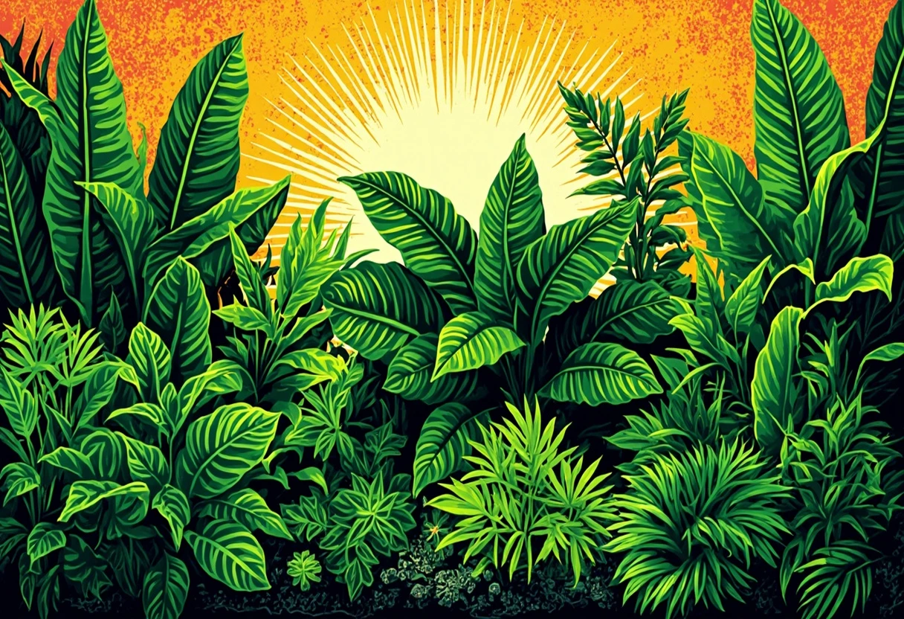

Warum Aquarienpflanzen?
Aquarienpflanzen sind weit mehr als nur Dekoration. Sie sind die Lunge deines Aquariums – sie produzieren Sauerstoff, binden Schadstoffe wie Nitrat und Phosphat, bieten Fischen und Garnelen Versteckmöglichkeiten und unterdrücken auf natürliche Weise Algenwachstum. Ein gut bepflanztes Aquarium ist stabiler, klarer und sieht einfach atemberaubend aus. Doch nicht jede Pflanze ist gleich pflegeleicht. Gerade als Anfänger solltest du mit robusten Arten starten, die auch mal einen Pflegefehler verzeihen. In diesem Guide stelle ich dir 15 bewährte Aquarienpflanzen vor – unterteilt in drei Schwierigkeitsstufen.
🌱 Einfache Anfängerpflanzen (Top 5)
Diese fünf Pflanzen sind praktisch unkaputtbar. Sie kommen mit wenig Licht aus, brauchen keine CO2-Anlage und wachsen auch bei Anfänger-Pflege zuverlässig.
1. Anubias barteri (Speerblatt)
Der absolute Klassiker unter den Aquarienpflanzen. Anubias ist eine Aufsitzerpflanze, die nicht in den Bodengrund gesetzt wird, sondern auf Wurzeln, Steine oder Dekoration gebunden wird. Sie wächst langsam, ist extrem genügsam und wird selbst von pflanzenfressenden Fischen in Ruhe gelassen. Einzige Regel: Das Rhizom (die dicke, horizontale Wurzelachse) darf nicht eingegraben werden, sonst fault sie. Lichtbedarf: niedrig. CO2: nicht nötig. Wachstum: langsam.
2. Javafarn (Microsorum pteropus)
Wie die Anubias ist auch der Javafarn eine Aufsitzerpflanze. Er wird auf Wurzeln oder Steine gebunden und bildet mit der Zeit dichte, grüne Büsche. Besonders schön wirkt er als Mittelgrund-Akzent. Javafarn ist extrem anpassungsfähig und wächst bei fast allen Wasserwerten. Ein häufiger Fehler: zu tiefes Einpflanzen im Bodengrund – auch hier muss das Rhizom frei bleiben. Lichtbedarf: niedrig bis mittel. CO2: nicht nötig. Wachstum: langsam.
3. Vallisneria (Wasserschraube / Vallisnerie)
Vallisnerien sind die perfekten Hintergrundpflanzen. Sie bilden lange, bandförmige Blätter, die bis zur Wasseroberfläche reichen und dort oft an der Oberfläche entlangtreiben. Sie vermehren sich über Ausläufer und bilden schnell dichte Vorhänge. Vallisnerien sind hervorragende Nitratfresser und helfen, das Wasser sauber zu halten. Lichtbedarf: mittel. CO2: nicht nötig. Wachstum: schnell.
4. Hornkraut (Ceratophyllum demersum)
Hornkraut wächst wie Unkraut – und das ist im Aquarium ein großes Kompliment. Die Pflanze hat keine echten Wurzeln und treibt frei im Wasser oder kann mit Saugnäpfen fixiert werden. Sie nimmt Nährstoffe direkt über die Blätter auf und wächst so schnell, dass sie Algen keine Chance lässt. Ein wöchentlicher Rückschnitt ist Pflicht, sonst überwuchert sie alles. Perfekt für die Einfahrphase oder als Schwimmpflanze. Lichtbedarf: niedrig bis mittel. CO2: nicht nötig. Wachstum: sehr schnell.
5. Wasserpest (Elodea canadensis / Egeria densa)
Wasserpest ist der Klassiker aus den Anfängen der Aquaristik – und das zu Recht. Sie wächst extrem schnell, ist nahezu unzerstörbar und hilft dabei, das Aquarium in der Einfahrphase stabil zu halten. Wie Hornkraut kann sie sowohl schwimmend als auch eingepflanzt gehalten werden. Ein hervorragender Nährstoffzehrer. Lichtbedarf: mittel. CO2: nicht nötig. Wachstum: sehr schnell.
🛒 Einsteiger-Pflanzensets für dein Aquarium
Viele Aquaristik-Shops bieten fertige Anfänger-Sets mit mehreren robusten Pflanzenarten. Damit startest du mit einer abwechslungsreichen Bepflanzung.
👉 Pflanzen-Sets bei Amazon entdecken🌿 Mittelstufe – für mehr Abwechslung (5 Pflanzen)
Diese Pflanzen sind etwas anspruchsvoller, aber immer noch gut machbar. Sie brauchen etwas mehr Licht und profitieren von einer regelmäßigen Düngung. Eine CO2-Anlage ist nicht zwingend nötig, aber die Pflanzen zeigen dann deutlich schöneres Wachstum.
6. Rotala rotundifolia
Rotala ist eine der schönsten Stängelpflanzen. Sie bildet feine, rötliche Blätter an langen Stängeln und wächst dicht und buschig. Besonders im Hintergrund oder an den Seiten gesetzt, sorgt sie für tolle Farbakzente. Bei wenig Licht bleiben die Blätter grün, bei viel Licht werden sie leicht rosa bis rötlich. Lichtbedarf: mittel bis hoch. CO2: empfohlen für intensive Färbung. Wachstum: schnell.
7. Staurogyne repens
Eine kompakte, hellgrüne Pflanze für den Vordergrund. Staurogyne repens bildet dichte, niedrige Büschel und eignet sich perfekt als weicher Übergang zwischen Bodengrund und höheren Pflanzen. Sie wächst langsamer als die meisten Stängelpflanzen und bleibt mit regelmäßigem Rückschnitt schön kompakt. Lichtbedarf: mittel. CO2: empfohlen. Wachstum: mittel.
8. Cryptocoryne wendtii (Wasserkelch)
Cryptocorynen sind Rosettenpflanzen mit wunderschön strukturierten Blättern. C. wendtii gibt es in verschiedenen Farbvarianten von hellgrün bis braunrot und eignet sich hervorragend für den Mittelgrund. Einzige Besonderheit: Cryptos reagieren empfindlich auf starke Veränderungen der Wasserwerte und können dann ihre Blätter abwerfen („Crypt-Fäule“). Keine Sorge – die Wurzel treibt in wenigen Wochen neu aus. Lichtbedarf: niedrig bis mittel. CO2: nicht nötig, aber förderlich. Wachstum: langsam bis mittel.
9. Eleocharis parvula / Eleocharis acicularis (Zwergnadelsimse)
Der Klassiker unter den Teppichpflanzen. Eleocharis bildet feine, grasähnliche Halme, die sich über Ausläufer zu einem dichten grünen Teppich ausbreiten. Für einen geschlossenen Pflanzenteppich brauchst du gute Beleuchtung und – je nach Art – etwas Geduld. E. acicularis kommt auch ohne CO2 aus, wächst dann aber langsamer. Lichtbedarf: mittel bis hoch. CO2: empfohlen für dichten Teppich. Wachstum: mittel.
10. Bucephalandra (Bucephalandra)
Bucephalandra ist die kleine Schwester der Anubias – ebenfalls eine Aufsitzerpflanze, aber mit feineren, welligen Blättern. Sie wächst sehr langsam, bildet aber unter guten Bedingungen schöne weiße Blüten unter Wasser. Die Blattoberfläche schimmert je nach Art metallisch-bläulich oder grün. Sammler lieben die unzähligen Varianten. Lichtbedarf: niedrig bis mittel. CO2: nicht nötig. Wachstum: sehr langsam.
🛒 Pflanzenpflege & Dünger
Flüssigdünger (Eisen, NPK) und Nährboden-Tabs helfen deinen Pflanzen, kräftig und gesund zu wachsen.
👉 Pflanzendünger bei Amazon ansehen🌟 Fortgeschrittene – für das perfekte Aquascape (5 Pflanzen)
Diese Pflanzen sind die Königsklasse. Sie brauchen eine CO2-Anlage, intensive Beleuchtung und regelmäßige Nährstoffversorgung. Dafür belohnen sie mit atemberaubenden Farben und Strukturen.
11. Hemianthus callitrichoides (HC Cuba)
Der absolute Star unter den Teppichpflanzen. HC Cuba bildet einen dichten, hellgrünen Polsterteppich, der aussieht wie eine saftige Wiese – nur unter Wasser. Diese Pflanze ist der Maßstab für High-Tech-Aquascapes. Sie braucht viel Licht (mindestens 1 Watt pro Liter LED), eine stabile CO2-Versorgung und konsequente Nährstoffdüngung. Ohne diese Bedingungen geht sie ein. Lichtbedarf: hoch. CO2: zwingend erforderlich. Wachstum: mittel.
12. Pogostemon helferi (Kleine Sternpflanze)
Diese kompakte Pflanze aus Thailand bildet kleine, krause Rosetten, die an Landpflanzen erinnern. Sie wird nur 5–8 cm hoch und eignet sich perfekt für den Vordergrund. Pogostemon helferi braucht gute Beleuchtung und reagiert empfindlich auf Nährstoffmangel – dann werden die Blätter blass oder gelb. Lichtbedarf: mittel bis hoch. CO2: empfohlen. Wachstum: langsam bis mittel.
13. Ludwigia repens (Ludwigie)
Ludwigia repens ist eine Stängelpflanze mit intensiv rötlichen Blättern – ein echter Farbtupfer. Unter starkem Licht und mit CO2-Versorgung färbt sie sich tiefrot bis orange. Ohne CO2 bleibt sie grünlich und wächst spärlicher. Sie eignet sich hervorragend für den Mittel- oder Hintergrund und setzt starke Akzente zwischen grünen Pflanzen. Lichtbedarf: hoch. CO2: empfohlen für Rotfärbung. Wachstum: mittel bis schnell.
14. Blyxa japonica
Blyxa japonica erinnert an Unterwassergras und bildet dichte, horizontale Büschel aus feinen, hellgrünen Blättern. Sie ist eine echte Herausforderung: Sie braucht gleichmäßige Nährstoff-, CO2- und Lichtverhältnisse. Schwankungen verzeiht sie nicht – dann fault sie schnell ein. Im richtigen Setup ist sie aber eine der schönsten Akzentpflanzen für den Mittelgrund. Lichtbedarf: mittel bis hoch. CO2: empfohlen. Wachstum: mittel.
15. Rotala macrandra (Große Rotala)
Die Königin der roten Aquarienpflanzen. Rotala macrandra hat große, runde Blätter mit intensiver Rotfärbung. Sie gilt als anspruchsvoll: Neben starkem Licht und CO2 braucht sie eine ausgewogene Eisen- und Spurenelementversorgung. Bei Nährstoffmangel werden die Blätter blass und löchrig. Aber wer die Pflege meistert, wird mit einem der spektakulärsten Farbakzente belohnt, die ein Aquarium zu bieten hat. Lichtbedarf: hoch. CO2: zwingend erforderlich. Wachstum: mittel.
🛒 High-Tech-Ausstattung für Pflanzenaquarien
CO2-Druckgasanlagen, leistungsstarke LED-Beleuchtung und hochwertige Düngesysteme – damit holst du das Maximum aus deinen Pflanzen heraus.
👉 High-Tech-Ausstattung bei Amazon entdecken💡 Pflegetipps für kräftige Aquarienpflanzen
Damit deine Pflanzen gesund bleiben, reichen ein paar grundlegende Maßnahmen:
Licht – der Energiequelle
Die Beleuchtungsdauer sollte 6–10 Stunden pro Tag betragen. Zu wenig Licht lässt Pflanzen kümmern, zu viel Licht (über 10 Stunden) begünstigt Algen. Achte auf die richtige Lichtfarbe: Ein Vollspektrum mit 6.500–8.000 Kelvin ist ideal für Pflanzenwachstum. Eine Zeitschaltuhr ist die günstigste und effektivste Investition für dein Aquarium.
Nährstoffe – die richtige Balance
Pflanzen brauchen Makronährstoffe (NPK: Stickstoff, Phosphor, Kalium) und Mikronährstoffe (Eisen, Mangan, Zink, Bor u.a.). Flüssigdünger werden wöchentlich dosiert, Nährboden-Tabs versorgen Wurzelpflanzen direkt im Bodengrund. Ein häufiger Anfängerfehler: zu wenig düngen aus Angst vor Algen. Die Wahrheit ist: Gut ernährte Pflanzen wachsen besser und verdrängen Algen – nicht umgekehrt.
CO2 – Turbo fürs Wachstum
Für Einsteiger ist eine CO2-Anlage nicht zwingend nötig. Die meisten Pflanzen aus der Anfänger-Liste kommen gut ohne aus. Wer aber dichte Teppiche, satte Rottöne oder üppiges Wachstum sehen will, sollte über eine CO2-Druckgasanlage nachdenken. Bio-CO2 (Zucker + Hefe) ist ein günstiger Einstieg, aber weniger stabil.
Rückschnitt & Vermehrung
Regelmäßiger Rückschnitt hält Pflanzen kompakt und verhindert, dass sie sich gegenseitig beschatten. Stängelpflanzen werden einfach gekürzt und die Stecklinge neu eingepflanzt. Ausläuferpflanzen (Vallisnerie, Eleocharis) kannst du teilen und verteilen. Aufsitzerpflanzen (Anubias, Javafarn) vermehren sich durch Teilung des Rhizoms – einfach mit einer scharfen Schere durchtrennen.
Pflanzenkrankheiten erkennen
- Gelbe Blätter: oft Eisenmangel – mit Eisendünger behandeln.
- Löchrige Blätter: Kaliummangel – kaliumbetonten Dünger einsetzen.
- Kümmerwuchs / Hellgrüne Blätter: zu wenig Licht oder CO2.
- Braune Ränder / Absterben: Überdüngung oder zu starke Wasserwert-Schwankungen.
Die goldene Regel der Pflanzenpflege: Beobachte deine Pflanzen. Sie zeigen dir früher als jedes Messgerät, ob etwas aus dem Gleichgewicht gerät. Ein gesundes Pflanzenblatt ist hellgrün, fest und frei von Löchern – alles andere ist ein Hinweis, den du ernst nehmen solltest.
Fazit
Die Wahl der richtigen Aquarienpflanzen hängt vor allem von deiner Technik und deinem Pflegeaufwand ab. Starte mit den einfachen Arten – Anubias, Javafarn, Vallisnerie, Hornkraut und Wasserpest – und taste dich dann Schritt für Schritt an anspruchsvollere Pflanzen heran. Jede Pflanze, die erfolgreich bei dir wächst, gibt dir mehr Sicherheit für das nächste Experiment.
Denk daran: Ein gut bepflanztes Aquarium ist nicht nur schöner, sondern auch deutlich pflegeleichter. Die Pflanzen sind deine wichtigsten Verbündeten im Kampf gegen Algen und schlechte Wasserwerte. Investiere also Zeit in die Bepflanzung – dein Aquarium wird es dir mit klarem Wasser und vitalen Tieren danken.
Mehr zum Thema Aquascaping und kreative Gestaltungsideen findest du in unserem Artikel Aquascaping für Anfänger. Und falls du mit der Fischhaltung beginnen möchtest, wirf einen Blick auf unseren Einsteiger-Guide.